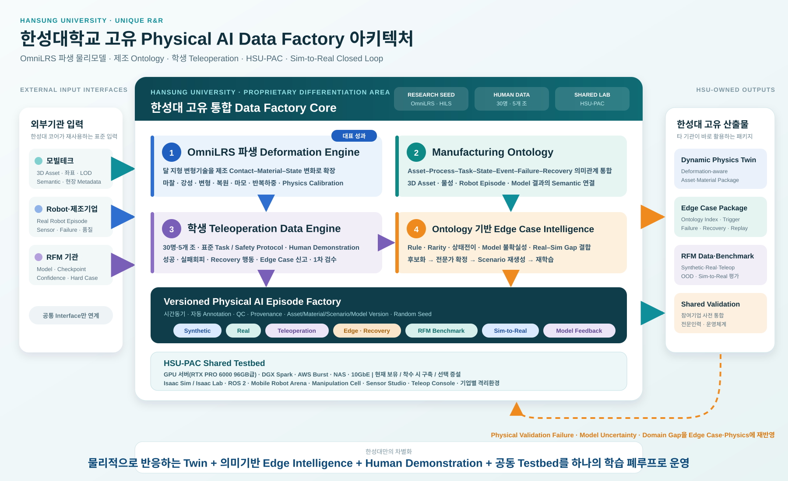

제조환경 Digital Twin·Deformation Engine 기반 Robot RFM 데이터팩토리¶
컨소시엄 제안 · Manufacturing Physical AI Data Factory & Robot Foundation Model
프로젝트 한눈에 보기
본 프로젝트는 실제 제조공간을 Simulation-ready Digital Twin으로 전환하고, 로봇의 접촉으로 발생하는 물리 상태 변화를 재현하는 Manufacturing Deformation Engine을 개발하여, 제조 로봇 파운데이션모델(RFM)의 학습·평가·Sim-to-Real 검증에 필요한 데이터를 지속적으로 생산하는 것을 목표로 합니다.
모빌테크는 현장 취득과 정밀 3D Asset·공간 Digital Twin을 담당하고, 한성대학교는 OmniLRS 활용 연구에서 축적한 변형지형·접촉물리 경험을 제조환경으로 확장해 물성 모델, 로봇 시뮬레이션, 합성데이터 생성, Ontology 기반 Edge Case 추출, 학생 Teleoperation Demonstration Data 구축, RFM 연계 및 실물 검증을 수행합니다. HSU-PAC 실습실은 참여기업의 Asset·Model·Robot을 사전 통합·검증하는 공동 Testbed로 운영합니다.
핵심 제안 — 모빌테크가 제조현장을 정밀 Geometry Twin 으로 전환하면, 한성대학교는 이를 실측 보정된 Physics Twin 으로 고도화하고, 실패·복구가 포함된 RFM 학습데이터와 검증 피드백으로 순환시킵니다.
한성대학교의 대표 성과 — 무엇으로 평가받을 것인가
본 과제에서 한성대학교가 주도 개발하는 성과는 다음 세 가지이며, 우선순위가 있습니다. 성과 귀속과 공개 범위는 협약으로 확정하며 원칙은 기술 상세에 있습니다.
① Manufacturing Deformation Engine (대표 성과) 로봇의 접촉으로 대상물의 형상·표면·잔류상태가 바뀌는 과정을 물리적으로 재현하는 엔진입니다. 한성대가 OmniLRS 변형지형 연구에서 직접 구동·계측해 본 코드를 제조 접촉물리로 파생·재설계합니다. 현재 컨소시엄 역할 협의안 기준, 한성대가 주도 제안하는 고유 기술영역입니다. 이 계층이 있어야 3D Digital Twin이 로봇 학습에 쓸 수 있는 Physics Twin으로 확장됩니다.
② 학생 주도 Human Data Engine 교육은 30명·5개 조, 과제 Dataset 생산은 MD-3 이수자 중 선발한 유급 참여자 6~9명(3개 조) 이 담당합니다. 표준 Protocol 아래에서 Teleoperation Demonstration을 생산하고 Edge Case를 발견·태깅·재현까지 수행합니다. Physical AI 마이크로디그리(MD) 과정이 인력 공급 경로이며, 교육 → 데이터 생산 → RFM 학습 → 결과 → 다시 교육으로 한 바퀴가 돕니다. 데이터 생산과 Physical AI 인력양성이 같은 활동에서 나옵니다.
③ Manufacturing Ontology·Edge Case Intelligence ①과 ②가 만든 데이터를 의미로 연결해 검색·재현·재학습이 가능한 자산으로 만듭니다.
위 세 가지는 개발 목표 항목으로 그대로 유지합니다. 2026-08-31 자 범위 구체화로 각각을 범용 플랫폼으로 만들지 않고 대표 제조 작업 1~2개를 대상으로 구체화했습니다 — 상세는 「연차별 개발 산출물·핵심 KPI·성과지표」 절과 연차별 목표 를 보십시오.
세 성과는 NVIDIA Cosmos 로 외관을, Isaac Sim·Deformation Engine 으로 물리 정답을 만들고, LeRobotDataset 으로 정규화해 RFM 기관에 넘기는 하나의 파이프라인 위에서 운영됩니다. 가져다 쓸 것과 직접 만들 것을 나눈 설계이며, 상세는 「Physical AI 구축 환경 최적화」 절에 있습니다.
담당 분야·역할·예산 확정 (2026-08-29 주관사 통보)
컨소시엄 협의로 한성대학교의 담당 분야는 실환경–가상환경 연계형 데이터 증강, 주요 역할은 ① Real-to-Sim-to-Real 고도화(디지털 트윈) ② Zero-shot Transfer 기반 도메인 적응 ③ 엣지 케이스 시뮬레이션 ④ 학술 연구 및 기술 자문 네 가지로 확정되었습니다. 연구개발비는 전체 정부지원연구개발비의 5 % 수준입니다.
아래 본문의 준비 내용은 이 네 역할 아래로 재배치했습니다 — 「한성대학교 담당 분야와 확정 R&R」 절을 먼저 보시면 됩니다. 연차별 연구내용과 예상 결과물은 주관사 제출용 별도 문서로 정리했습니다(2026-08-31 제출).
개발 목표 항목은 그대로 두고, 범위를 좁혔습니다(2026-08-31). 세 기술축(Manufacturing Deformation Engine · Human Data Engine · Manufacturing Ontology·Edge Case Intelligence)은 유지합니다. 다만 각각을 범용 플랫폼으로 개발하지 않고 대표 제조 작업 1~2개를 정해 「실제 데이터 수집 → 가상환경 물리 보정 → RFM 취약조건과 실패·복구 데이터 생성 → 자동 검수 → RFM 재학습 → 실제 로봇 재검증」 순환을 한 바퀴 완주합니다.
한 줄로 말하면 — 실제 로봇의 실패를 가상환경에서 재현하고, 학습 가능한 데이터로 바꾸는 일입니다. 확정된 5 % 규모에서 물리엔진이나 대형 모델을 새로 만드는 계획은 성립하지 않습니다. 가상 데이터 생성에는 공개된 World Foundation Model 을 수단으로 활용하되, 생성결과는 반드시 Physics Twin 으로 검증한 뒤 학습·평가에 씁니다.
아래 「대표 성과」 이하 서술은 확정 이전 준비 내용이며, 각 항목의 현재 위상은 확정 R&R 절의 대응표를 따릅니다.
사업·역할 상태
이 페이지는 컨소시엄 제안 단계의 한성대학교–모빌테크 공동 R&R과 기술구조를 정리한 것입니다. 제조 Use Case, 대상 설비·로봇, 정량 KPI와 기관별 최종 책임범위는 컨소시엄 협의와 실증환경 확정 후 기준선(Baseline)으로 관리합니다.
모빌테크의 위치는 재확인 대상입니다. 아래 공동 R&R 서술은 확정 통보 이전에 준비한 것으로, 모빌테크가 한성대 몫 안에 포함인지 별도 참여기관인지에 따라 범위가 달라집니다.

글자가 작으면 원본 SVG 열기
{kind=link}
이 문서의 구성
본문 여섯 절이면 협의·검토에 충분합니다. 근거·수치·운영 규약이 필요할 때 뒤의 상세 근거를 보시면 됩니다.
이 페이지의 범위
여기는 대표 페이지입니다 — 과제 개요, 대표 성과, 아키텍처, 세부 R&R, 일정, 예산 요약.
연차별 목표·정량 목표·성과지표는 연차별 목표 에 있습니다.
기술 근거·수치·운영 규약은 기술 상세 에 있습니다 — Deformation Engine, Ontology·Edge Case, 학생 Human Data Engine, Cosmos·LeRobot 구축, 정량 KPI 전체.
과제 개요와 공고 정합성¶
본 제안은 산업통상부 공고 제2026-549호(2026. 8. 13.) 「2026년도 제2차 로봇산업기술개발사업 신규지원 대상과제」의 연구개발과제 1 — 로봇 데이터팩토리 구축 및 로봇파운데이션모델(RFM) 개발을 대상으로 합니다.
| 항목 | 공고 기준 |
|---|---|
| 내역사업 | 로봇산업기술개발 (로봇산업핵심기술개발) |
| 주관연구개발기관 | 제한없음 |
| 지원규모 | 7,500백만원 |
| 수행기간 | 43개월 |
| 과제유형 | 일반 · 원천기술형 · 품목지정형 |
| 과제특징 | 초격차 (R&D자율성트랙(일반) 신청 가능) |
| 접수 | 2026. 8. 21.(금) ~ 9. 11.(금) 18:00, 범부처통합연구지원시스템(IRIS) |
| 평가 배점 | 기술성 60 / 연구역량 20 / 사업화·경제성 20 — 종합 70점 미만 지원제외 |
| 대학 지원비율 | 정부지원연구개발비 연구개발비의 100% 이하, 기관부담 현금은 필요시 |
본 자료의 기준
일정·예산은 공고문 기준(수행기간 43개월 · 지원규모 7,500백만원) 으로 통일해 작성했습니다. 사업기간은 4개 차년도로 나눕니다 — 1차 9개월 · 2차 10개월 · 3차 12개월 · 4차 12개월.
컨소시엄 협의 과정에서 이와 다른 총사업비가 공유된 바 있으나, 공식 근거가 확인되기 전까지 본문에서는 사용하지 않습니다. 해당 사항과 상세 RFP/품목서 확보 여부는 내부 미결항목 관리대장에서 별도로 추적합니다.
대학 참여기관으로서의 적합성¶
| 평가 관점 | 본 제안의 대응 근거 |
|---|---|
| RFP/품목 부합성 | 데이터팩토리(데이터 생성·정제·관리)와 RFM(학습·평가) 사이의 제조 물리·의미 계층을 담당 |
| 목표의 도전성 | 시각 중심 Digital Twin을 접촉·변형·누적상태가 반영되는 Physics Twin으로 전환 |
| 연구조직 역량 | OmniLRS 기반 Isaac Sim·ROS 2 시뮬레이션과 변형지형·HILS 수행실적, HSU-PAC 인프라 |
| 연구 인프라 | GPU·Isaac Sim·ROS 2·NAS·실물 로봇을 갖춘 HSU-PAC을 참여기업 공동 Testbed로 개방 |
| 지역·인력 파급 | 교육 30명·5개 조 · 유급 생산 6~9명 체계로 데이터 생산과 Physical AI 인력양성을 동시 수행 |
한성대학교 고유 Physical AI Data Factory 아키텍처¶
한성대의 차별성은 개별 기술을 보유하는 데 그치지 않고, OmniLRS 파생 Deformation Engine, Manufacturing Ontology, MD 과정 기반 Teleoperation Data Engine, Ontology 기반 Edge Case Intelligence를 Versioned Episode Factory와 HSU-PAC 안에서 하나의 학습 폐루프로 운영하는 데 있습니다. 결과물은 Dynamic Physics Twin, 재생 가능한 Edge Case·Recovery Package, RFM Dataset· Benchmark와 참여기업 공동검증 체계로 제공됩니다.
한성대학교 담당 분야와 확정 R&R¶
담당 분야 — 실환경–가상환경 연계형 데이터 증강. 실제 제조환경에서 얻은 것과 가상환경에서 만든 것을 서로 오가게 해서, RFM이 학습할 수 있는 데이터를 늘리는 일입니다. 늘린다는 것은 양을 부풀리는 것이 아니라 실환경에서 얻기 어려운 조건을 가상에서 만들어내고, 그것이 실환경에서도 통하는지 확인해 되먹이는 것을 뜻합니다.
| # | 주요 역할 | 무엇을 하는가 | 이 역할이 없으면 |
|---|---|---|---|
| ① | Real-to-Sim-to-Real 고도화(디지털 트윈) | 실제 공정을 물리적으로 반응하는 Twin으로 옮기고, 그 결과를 실환경에서 검증해 파라미터를 되먹인다 | 가상에서 만든 데이터가 실제와 다른지 알 방법이 없다 |
| ② | Zero-shot Transfer 기반 도메인 적응 | 실환경–가상환경 격차를 요인별로 정의·측정하고, 증강으로 좁혀 추가 학습 없이 실물에서 동작하게 한다 | 현장마다 다시 학습해야 하고, 데이터팩토리의 값어치가 떨어진다 |
| ③ | 엣지 케이스 시뮬레이션 | 실제로는 드물게만 나타나는 실패·경계·복구 상황을 의도적으로 생성해 학습 가능한 데이터로 만든다 | 정상 동작만 많아지고, 정작 위험한 상황은 학습되지 않는다 |
| ④ | 학술 연구 및 기술 자문 | 위 세 가지를 논문·특허·표준 제안으로 정리하고 컨소시엄 기술 판단에 근거를 제공한다 | 결과가 이 과제 안에만 남고 검증·재사용 경로가 없다 |
확정 역할과 준비 내용의 대응¶
앞서 준비한 Work Package(HSU-1~7)는 폐기하지 않고 확정 역할 아래로 재배치했습니다. 아래 세부 표는 그 상세이며, 읽는 순서는 확정 역할이 먼저입니다.
| 확정 역할 | 대응하는 Work Package |
|---|---|
| ① Real-to-Sim-to-Real 고도화 | HSU-2 Deformation Engine, HSU-3 제조 로봇 시뮬레이션, HSU-7 Sim-to-Real 검증 |
| ② Zero-shot Transfer 도메인 적응 | HSU-5 학습데이터 생성(Domain Randomization·Scene–Scenario 정합), HSU-7 Domain Gap 분석 |
| ③ 엣지 케이스 시뮬레이션 | HSU-4 Ontology·Edge Case, HSU-3 Scenario Library |
| ④ 학술 연구·기술 자문 | HSU-1 Use Case·Interface 설계, HSU-6 RFM 연계·평가기준 |
준비 내용에서 위상이 바뀐 항목¶
| 항목 | 이전 준비안 | 현재 | 왜 바뀌었나 |
|---|---|---|---|
| Deformation Engine | 자체 개발하는 대표 성과 | Physics Grounding Layer 의 물성 보정·정합 검증 역량 | 5 % 규모에서 물리엔진 신규 개발은 성립하지 않습니다. OmniLRS 변형지형 구동·계측 경험은 생성결과를 물리적으로 반증하는 능력으로 재배치됩니다 |
| NVIDIA Cosmos | 외관 다양화에 가져다 쓰는 도구 | 기준 구현 모델 (Cosmos-Predict2.5 기준, 후속 계열 호환) | Action-conditioned Post-training 과 LoRA 절차가 공식 제공되어 과제 내 검증이 가능합니다 |
| Genie 3 | 없음 | 선택형 시나리오 탐색 계층 | 인터랙티브 월드 생성은 유용하나 Project Genie 는 연구 프로토타입이라 필수 전제로 삼을 수 없습니다 |
| HIL 검증 | 부수적 언급 | 독립 검증 계층 | 물리·정책 검증과 실로봇 사이에 제어주기·통신·실시간성 확인 단계가 필요합니다 |
| 전체 범위 (2026-08-31) | 세 기술축을 각각 범용 플랫폼으로 | 대표 제조 작업 1~2개로 한정, 순환 한 바퀴 완주 | 5 % 규모로 범용 플랫폼 셋을 만들면 어느 것도 끝까지 검증되지 않습니다 |
| 학생 Human Data Engine (재조정) | 대량 생산 → 1차 검수로 축소 | 실패상태 저장·복원과 복구 행동 증강이 핵심 기법으로 복귀 | 실패 직전 상태로 되돌아가 여러 복구를 시도하면, 하나의 실패에서 여러 복구 데이터를 얻습니다 |
세부 개발 내용과 위험 대응전략은 제안서 본문에 있습니다.
범위가 조정되는 항목
확정된 네 역할에 학생 Teleoperation Demonstration 대량 생산은 명시되어 있지 않습니다. 연구개발비 5 % 규모와도 맞물리므로, 학생 Human Data Engine은 데이터 대량 생산이 아니라 ③ 엣지 케이스 시뮬레이션의 재현 조건 탐색·복구 시연·1차 검수로 범위를 좁혀 유지합니다. Physical AI MD 과정 자체는 인력 공급 경로로 남습니다.
아래 「기여하는 핵심 가치」와 「기대 산출물」의 서술 일부는 확정 이전 준비 내용이며, 최종 범위는 주관사 양식 수령 후 조정합니다.
한성대학교 세부 R&R¶
한성대학교는 전체 컨소시엄에서 제조환경 Digital Twin을 데이터와 RFM, 실제 Robot HW로 연결하는 Ontology–Simulation–Data–Sim-to-Real 기술 인터페이스를 담당합니다.
| Work Package | 한성대학교 주도 업무 | 주요 산출물 |
|---|---|---|
| HSU-1. Use Case·Interface 설계 | 제조 Task·Process·Failure Case와 Robot·Sensor 요구조건 정의 | Use Case 명세, 공통 Interface·Dataset Schema |
| HSU-2. Deformation Engine | [대표 성과] 물성 Profile, 접촉·변형·누적상태 모델과 파라미터 보정, 실계측 기반 검증 | Manufacturing Deformation Engine, Material Library, Calibration Tool, 검증 리포트 |
| HSU-3. 제조 로봇 시뮬레이션 | Isaac Sim·ROS 2 기반 Robot·Sensor·Task·Scenario 구성 | Simulation Package, Scenario Library |
| HSU-4. Ontology·Edge Case | 제조 자산·공정·상태·이벤트·실패·복구 Ontology와 Edge Case 후보 추출, 희소조합을 생성 조건으로 변환(Cosmos 조준), 학생 1차 검수 체계 운영 | Manufacturing Ontology, Knowledge Graph, Edge Case Extractor, 생성 조건 명세 |
| HSU-5. 학습데이터 생성 | Domain Randomization, Cosmos 생성물과 Isaac Sim Episode 의 Scene–Scenario 정합, 자동 Annotation, LeRobotDataset v3 정규화, Physical AI MD 과정 기반 Demonstration·Edge Case 수집 운영(교육 30명·5개 조 / 유급 생산 6~9명·3개 조) | RFM용 Dataset·Metadata·품질 리포트, Demonstration Corpus, MD 교보재 |
| HSU-6. RFM 연계 | RFM 기관과 Observation·Action·Task·Model Interface 및 평가기준 협의, LeRobotDataset 확장 필드 규약 정의 | RFM Adapter, Benchmark·Evaluation Protocol, Dataset 규약서 |
| HSU-7. 공동 Testbed·Physical Validation | HSU-PAC 참여기업 공동활용, 실제 Robot HW 적용, Domain Gap 분석 | 사전 통합환경, Sim-to-Real 검증결과, Feedback Data |
한성대학교가 기여하는 핵심 가치¶
| 기여영역 | 한성대학교의 차별적 기여 | 컨소시엄 효과 |
|---|---|---|
| Dynamic Physics Twin [대표] | OmniLRS 변형지형 연구경험을 제조용 접촉·물성·변형 모델로 파생 — 한성대가 주도 제안하는 고유 기술영역 | 3D 시각화를 로봇 행동이 가능한 Physics Twin으로 확장 |
| Asset–Physics 표준 | 3D Asset에 Collision, Joint, 질량·관성, 물성·Sensor Metadata를 결합 | 모빌테크 산출물을 Isaac Sim·RFM·Robot HW가 재사용 |
| Ontology·Edge Case | 자산–공정–상태–이벤트–실패–복구 관계를 구조화하고 규칙·희소성·모델 불확실성으로 후보 추출 | 흩어진 실패 로그를 재현 가능한 학습 Scenario로 전환 |
| 제조 데이터 생성 | 정상·경계·실패·복구 Scenario, Domain Randomization, Teleoperation, 자동 Annotation | Synthetic·Real·Human Demonstration이 결합된 RFM 학습데이터 확보 |
| 학생 Human Data Engine | Physical AI MD 과정 위에서 유급 참여자가 Demonstration 생산부터 Edge Case 1차 검수·재현 조건 탐색·복구 시연까지 수행. 모델 결과가 다음 학기 교재로 되돌아옴 | 학습데이터와 Edge Case가 한 팀에서 나오고, 과제 종료 후에도 MD 과정과 숙련 인력이 남음 |
| RFM 평가 Interface | Observation·Action·Task·Embodiment Schema와 Benchmark 설계 | 기관별 모델을 동일 제조조건에서 비교·평가 |
| Sim-to-Real 검증 | 실물 Robot의 Domain Gap·Failure·Edge Case를 물성·Scenario에 재반영 | 데이터 생성–재학습–재검증의 지속 개선 Loop 구축 |
| HSU-PAC 공동활용 | GPU·Isaac Sim·ROS 2·NAS·실물 로봇과 기업별 격리환경 제공 | 참여기업이 Asset·Model·Robot을 반입해 본 실증 전 사전 통합·검증 |
제조 Task·Scenario Library¶
초기 대상은 컨소시엄 제조 Use Case와 로봇 구성이 확정된 뒤 기준선으로 동결합니다.
- 이송·물류 — AMR 이동, 적재·하역, 도킹, 통로 폐색과 미끄럼 조건
- 조작 — Pick & Place, Bin Picking, 파지 실패, 대상물 변형·미끄럼·낙하
- 조립 — 삽입, 체결, 정렬, 공차와 접촉력 변화, 치구 위치 편차
- 검사 — Camera·Depth·LiDAR·F/T 기반 외관·치수·접촉 품질검사
- 예외·복구 — 설비 정지, 센서 열화, 부품 누락, 충돌 위험, 작업 재계획
각 Task는 정상–경계–실패–복구 상태를 포함하고, 환경·설비·부품·로봇·센서 조건을 독립적으로 변화시킬 수 있도록 구성합니다.
단계별 추진안¶
| 단계 | 핵심 활동 | 완료 기준 |
|---|---|---|
| 1. 기준선 설계 | 제조 Use Case, 실증조건, Asset·Material·Ontology·Data Interface와 Teleoperation Protocol 합의 | 공동 Interface Specification 승인 |
| 2. Digital Twin 구축 | 현장 취득, 3D Asset, 좌표·Semantic·물성정보 연결 | Simulation-ready Asset Package 검수 |
| 3. Physics·Scenario 개발 | Deformation Engine, Robot·Sensor·Task Scenario 구현 | 기준 물성시험·시뮬레이션 재현 |
| 4. Data·RFM 연계 | Ontology Edge Case 추출, Synthetic·Real·Teleoperation Dataset, RFM Adapter·평가 | 학습·평가 Pipeline 재현 가능 |
| 5. Physical Validation | 실제 Robot 적용, Domain Gap 분석, 반복 보정 | 공통 KPI 기반 Sim-to-Real 검증 |
| 6. 데이터팩토리 운영 | 참여기업 공동활용, 실패·Edge Case 후보화, Scenario 재생성·재학습 | Shared Testbed와 Validation Feedback Loop 운영 |
차년도 매핑과 마일스톤¶
6개 단계는 4개 차년도에 걸쳐 중첩 수행합니다. 1단계는 전 기간에 걸쳐 개정되고, 5·6단계는 3차년도부터 반복 Loop로 운영됩니다.
| 차년도 | 주 수행 단계 | 마일스톤(완료 판정 대상) |
|---|---|---|
| 1차년도 | 1 기준선 설계, 2 착수 | M1 공동 Interface Specification 승인 · M2 Pilot Scan과 기준 3D Asset 검수 · M3 Ontology v1과 Teleoperation·안전 Protocol 승인 |
| 2차년도 | 2 완료, 3 주력 | M4 제조공간 Digital Twin 본 구축 검수 · M5 Deformation Engine 1차와 Material Library · M6 Edge Case Extractor 1차, Teleoperation 수집환경 가동 |
| 3차년도 | 4 주력, 5 착수, 6 개시 | M7 Synthetic·Real·Demonstration Dataset 1차 릴리스 · M8 RFM Adapter·Benchmark 합의 · M9 실물 Robot Domain Gap 1차 측정 · M10 참여기업 Shared Testbed 운영 개시 |
| 4차년도 | 5·6 반복, 표준화 | M11 Edge Case·Recovery Corpus 고도화 · M12 재학습–재검증 Loop 1회 완주(기본안, 확장 시 2회 이상) · M13 Ontology·Interface·Asset·Dataset 표준화 · M14 상생공간·현장 연계 최종 실증 |
| 단계 | 1차 (9개월) | 2차 (10개월) | 3차 (12개월) | 4차 (12개월) |
|---|---|---|---|---|
| 1. 기준선·Interface 설계 | ● | ◐ | ◐ | ◐ |
| 2. Digital Twin 구축 | ◐ | ● | ○ | ○ |
| 3. Physics·Scenario 개발 | ○ | ● | ◐ | ○ |
| 4. Data·RFM 연계 | ○ | ◐ | ● | ◐ |
| 5. Physical Validation | ○ | ○ | ● | ● |
| 6. 데이터팩토리 운영 | ○ | ○ | ◐ | ● |
● 주 수행 · ◐ 병행·개정 · ○ 준비 또는 해당 없음
일정 가정
위 구간은 43개월을 4개 차년도로 나눈 일정입니다 — 1차 9개월 · 2차 10개월 · 3차 12개월 · 4차 12개월. 기간이 달라져도 마일스톤 순서는 유지하고 구간만 조정합니다.
연차별 개발 산출물·핵심 KPI·성과지표¶
기간은 43개월 · 4개 차년도 — 1차 9개월 · 2차 10개월 · 3차 12개월 · 4차 12개월입니다. 아래는 요약이며, 차년도별 목표와 완료 판정은 연차별 목표 에 있습니다.
범위를 좁혔습니다
세 기술축을 각각 범용 플랫폼으로 개발하지 않습니다. 대표 제조 작업 1~2개를 정하고, 「실제 데이터 수집 → 가상환경 물리 보정 → RFM 취약조건과 실패·복구 데이터 생성 → 자동 검수 → RFM 재학습 → 실제 로봇 재검증」 순환을 한 바퀴 완주하는 데 집중합니다.
한 줄로 말하면 — 실제 로봇의 실패를 가상환경에서 재현하고, 학습 가능한 데이터로 바꾸는 일입니다.
연차별 개발 산출물¶
| 차년도 | 목표 | 핵심 산출물 |
|---|---|---|
| 1차 (9개월) | 대표 제조 작업 및 연계기준 확정 | 대표 작업 1~2개와 실패유형 선정 · 실환경–가상환경–RFM 데이터 연계규격 · 작업·상태·실패·복구 관계 구조 v1 · 실제–가상 비교 평가절차 |
| 2차 (10개월) | 물리 가상환경 및 데이터 수집환경 구축 | 대표 작업 물리 가상환경 · 제조 변형·물성 보정 기술 v1 · 대표 소재 실측 물성값 · 시연·실패·복구 데이터 수집환경 · 실패 가능조건 추출기 v1 |
| 3차 (12개월) | 취약조건 중심 데이터 생성 및 RFM 평가 | 정상·실패·복구·가상 생성 데이터셋 1차 공개 · RFM 취약조건·엣지 케이스 생성기 · 생성 데이터 자동 검수 · RFM 연계도구·평가기준 |
| 4차 (12개월) | 실패·복구 데이터 순환체계 및 최종 실증 | 실제 실패의 가상환경 재현 · 실패상태 복원·복구 행동 증강 · RFM 재학습·실제 로봇 재검증 · 데이터·평가절차 표준화 · 통합 실증 가이드 |
핵심 KPI¶
기준선 확정 전 잠정치입니다
대표 제조 작업·소재·실증환경이 확정되고 기준 데이터를 실측한 뒤 컨소시엄 공통 KPI 로 동결합니다. 확정 전에는 협약 목표로 인용하지 않습니다.
| # | KPI | 목표 | 측정 방법 |
|---|---|---|---|
| 1 | 대표 작업의 접촉력 재현오차 | ≤ 20 % | 동일 물체·자세·속도에서 실제 힘 센서값과 가상환경값 비교 |
| 2 | 대표 소재의 잔류변형 재현오차 | ≤ 25 % | 반복하중 조건에서 작업 전후 실제 형상과 가상 형상 비교 |
| 3 | 실제–가상 작업 성공률 차이 | ≤ 20 %p | 같은 작업·조건에서 가상환경과 실제 로봇의 성공률 차이 |
| 4 | 주요 실패유형별 복구 데이터 확보율 | ≥ 80 % | 주요 실패유형 중 유효한 복구 시나리오·데이터 확보 비율 |
| 5 | 엣지 케이스 데이터 검수 완료율 | ≥ 90 % | 생성 데이터 중 검수 완료 비율 |
| 6 | 실제 주요 실패의 가상환경 재현율 | ≥ 70 % | 실제 발생한 주요 실패를 가상환경에서 다시 만들어 낸 비율 |
| 7 | 미학습 물체·배치·물성조건 성능 유지율 | ≥ 70 % | 미학습 조건에서 기준환경 대비 작업성공률 — 확정 역할 ② 를 직접 평가 |
| 8 | 엣지 케이스·복구 데이터 적용 후 실제 성공률 향상 | + 10 %p 이상 | 생성 데이터로 재학습한 모델의 실제 로봇 성공률 변화 |
8번이 최종 성과지표입니다 — 만든 데이터가 실제 RFM 성능 개선으로 이어졌는지를 봅니다.
성과지표 (4년 누계)¶
| 구분 | 1차 | 2차 | 3차 | 4차 | 누계 |
|---|---|---|---|---|---|
| SCI(E)급 논문 | — | 1 | 1 | 1 | 3 |
| 국내외 학술발표 | 1 | 2 | 2 | 2 | 7 |
| 특허 출원 / 등록 | — | 1 | 1 | 1 / 1 | 3 / 1 |
| SW 프로그램 등록 | — | 1 | 1 | 1 | 3 |
| 표준 제안 · 기술 백서 | — | — | — | 1 | 1 |
확정 역할 ④가 학술 연구 및 기술 자문인 만큼, 논문·특허는 부수 성과가 아니라 계약된 산출물로 관리합니다.
예산 요약¶
2026-08-29 주관사 통보로 한성대학교 연구개발비는 「전체 정부지원연구개발비의 5 % 수준」 으로 확정되었습니다. 아래 표는 확정 비율에 따른 배분안이며, 아래 두 항목이 닫히면 금액으로 환산합니다.
| 확인할 것 | 현재 상태 |
|---|---|
| 5 %의 모수 — 정부지원연구개발비 총액 | 공고문 지원규모는 7,500백만원, 별도 메모에는 정부지원 75억. 모수 확정 필요 |
| 모빌테크의 위치 | 한성대 몫 안에 포함인지 별도 참여기관인지에 따라 ① 역할 범위가 달라짐 |
확정 비율의 배분안¶
| 주요 역할 | 비중 | 근거 |
|---|---|---|
| ① Real-to-Sim-to-Real 고도화 | 36 % | 물성시험·보정·실물 대조가 이 항목에 몰림 |
| ② Zero-shot Transfer 도메인 적응 | 24 % | 증강 모듈 개발과 전이 평가 |
| ③ 엣지 케이스 시뮬레이션 | 25 % | Ontology·생성기·재현 검증 |
| ④ 학술 연구·기술 자문 | 15 % | 논문·특허·표준 제안과 자문 |
| 차년도 | 비중 | 근거 |
|---|---|---|
| 1차년도 (9개월) | 18 % | 기간이 짧고 환경 구축·설계 중심 |
| 2차년도 (10개월) | 26 % | 기간 대비 밀도가 가장 높음 — Compiler·Evaluator·Library 개발 |
| 3차년도 (12개월) | 29 % | HIL 검증과 전이 평가 |
| 4차년도 (12개월) | 27 % | 고도화·표준화 |
범위를 줄이면 금액이 따라 줄어드는 구조입니다
비중은 기관 수 균등배분이 아니라 수행범위와 투입인력에서 쌓아 올린 값입니다. 연구인력 인월(M/M), 물성시험 횟수·단가, 장비 수량·단가를 근거로 산정했으며 상세 산정표는 내부 자료로 관리합니다.
확정된 5 % 규모에 맞춰 ① 소재군 ② Use Case ③ Digital Twin 대상 ④ 반복 검증 횟수 순으로 범위를 조정합니다. 예컨대 소재군을 2종에서 4종으로 늘리면 물성시험이 30회에서 60회 이상으로 늘어납니다.
확정 이전 준비안 (참고)¶
아래는 확정 통보 이전에 수행범위 기준으로 쌓아 올린 준비안입니다. 현재 유효한 것은 위의 5 % 확정안이며, 이 표는 「범위를 줄이면 금액이 따라 준다」를 보이는 근거로만 남깁니다.
| 구분 | 4년 합계 | 연평균 |
|---|---|---|
| 한성대학교 직접 수행예산 | 7.0억 | 1.75억 |
| 모빌테크 공동개발 예산 | 3.0억 | 0.75억 |
| 공동 패키지 합계 | 10.0억 | 2.5억 |
Work Package별 배분 — HSU-2 Deformation Engine 2.2억(31%), HSU-4 1.1, HSU-5 1.1, HSU-3 1.0, HSU-7 0.6, HSU-1 0.5, HSU-6 0.5.
기대 산출물¶
대표 산출물 — Manufacturing Deformation Engine¶
| 구성물 | 내용 |
|---|---|
| Engine 본체 | Contact Patch Estimator, Material Response Model, State Update, Data Labeler — Isaac Sim 연동 모듈 |
| Material Library | 소재군별 마찰·강성·감쇠·복원·변형/파손 임계값과 불확실성 범위 |
| Calibration Tool | 실계측 데이터로 파라미터를 식별·보정하는 도구와 절차서 |
| 검증 리포트 | v1~v3 각 단계의 시험 조건, 실측 대조 결과, 오차와 적용 한계 |
| 공개 성과 | 논문·특허와 Engine 규격 문서 — 컨소시엄 참여기관이 재현할 수 있는 수준의 기술문서 |
학생 주도 Human Data Engine 산출물¶
| 구성물 | 내용 |
|---|---|
| Demonstration Corpus | 성공·경계·실패회피·복구 행동, 작업자·전략 다양성이 확보된 Episode 집합 |
| Edge Case 검수 결과 | 재생 확인·태깅·병합·기각 이력과 학생 신고(flag) 기반 신규 후보 |
| 복구 시연 Set | 확정된 실패 상황별 사람의 복구 행동 기록 |
| 운영 Protocol | Task·안전·품질 SOP, 6인 역할 순환 체계, 교육·검수 절차서 |
| 인력 성과 | 6개 역할을 모두 경험한 Physical AI 실무인력 |
| MD 과정 교보재 | 모듈별 교재·실습 Protocol, QC 반려 사례집, 모델 실패 사례연구 — 과제 종료 후에도 운영 가능 |
그 밖의 산출물¶
- 제조환경 Simulation-ready Digital Twin Asset Package와 검수 기준
- 물성·접촉·변형 파라미터 Material & Physics Schema
- 제조 자산·공정·상태·실패·복구를 연결하는 Manufacturing Ontology·Knowledge Graph
- 규칙·희소성·불확실성·Domain Gap 기반 Edge Case Extractor와 Scenario Package
- Isaac Sim·ROS 2 기반 Robot·Sensor·Task Scenario Library
- 정상·실패·복구·Edge Case를 포함한 Synthetic·Real·Teleoperation RFM Dataset
- RFM·Robot HW 연계를 위한 Model·Control·Validation Interface
- 참여기업 Asset·Model·Robot의 HSU-PAC 공동 사전검증 운영체계
- 실물 검증 기반 Domain Gap Report와 Calibration Data
- 반복적인 데이터 생성–학습–검증을 위한 Validation Feedback Pipeline
- Ontology 희소조합을 생성 조건으로 바꾸는 Cosmos 조준 규약과 생성 조건 명세
- 접촉력·변형량·물성·Edge Case ID 를 담는 LeRobotDataset 확장 필드 규약서
- Cosmos 생성물과 Isaac Sim Episode 를 Asset·Scenario·Task·Material 버전으로 잇는 Scene–Scenario 정합 절차
- 지표 정의·산정식·측정절차를 담은 정량 KPI 정의서와 기준선(Baseline) Report
- 기간·범위·기술 리스크의 리스크 관리대장과 완화 이력 — 현황은 기술 상세 참조
더 읽을 것¶
- 기술 상세 — Deformation Engine · Ontology·Edge Case · 학생 Human Data Engine · Cosmos·LeRobot 구축 최적화 · 정량 KPI 전체 · 검증 체계
- 한성대학교 Physical AI 교육·연구 플랫폼 HSU-PAC
Manufacturing Digital Twin · Deformation Engine · Manufacturing Ontology · NVIDIA Cosmos · LeRobot · Robot Foundation Model · Isaac Sim · ROS 2 · Sim-to-Real